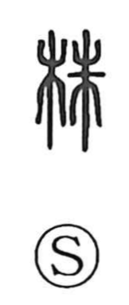

株

Kun: kabu | On: shu
stump ・ stock (share)
Explanation
A phono-semantic compound: the left element 木 marks the sense of “tree,” while 朱 supplies the sound (On reading shu). Shirakawa understands 朱 as a drawing of a tree trunk with a thick dot added, highlighting the swelling at its base. Accordingly, 株 names the portion near the roots—the above-ground stump—contrasted with 根, which refers to what lies below the soil. In Japan the word extends to finance in 株式, where capital is divided into discrete “shares,” as if portions cut from a common trunk.